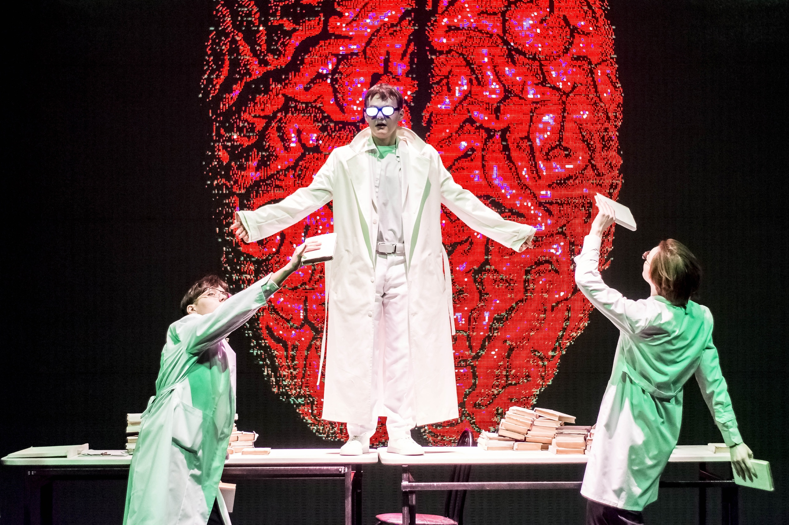
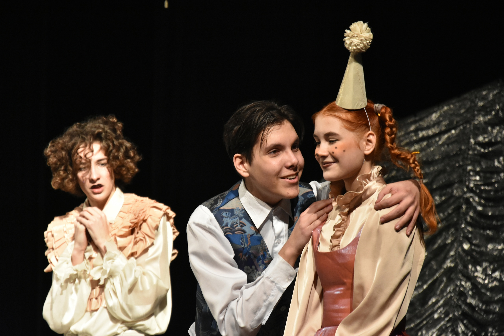
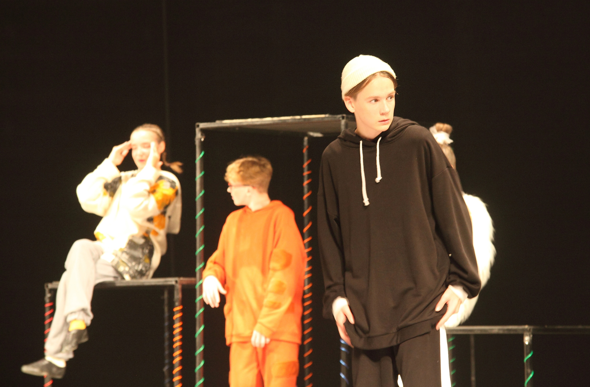
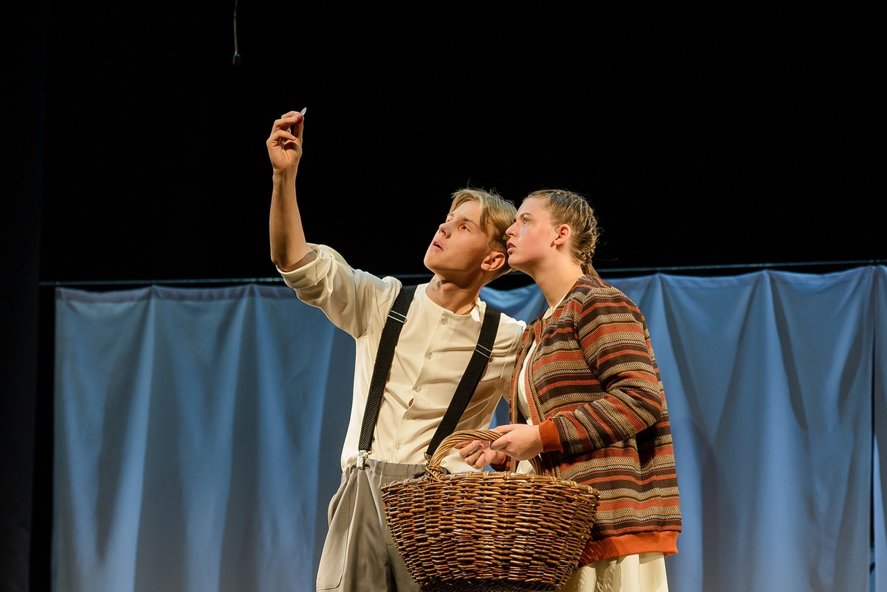
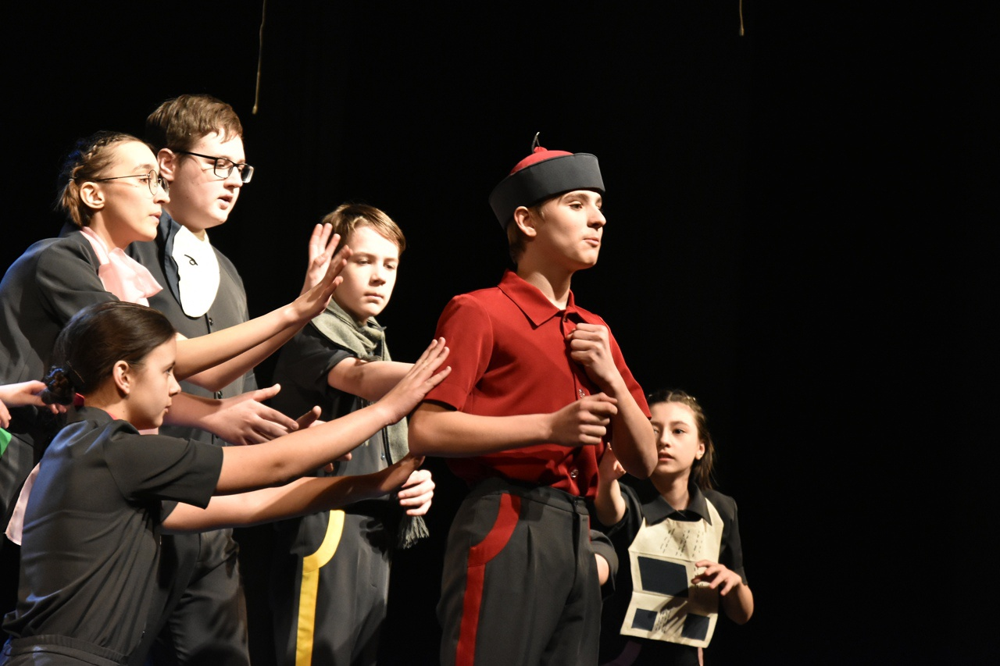
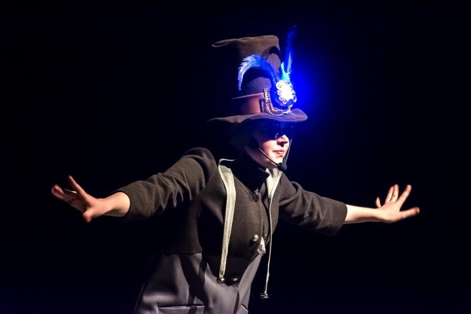

🌊 Уникальная возможность погрузиться в бездонную пучину морской глади и увидеть историю о первой любви, написанную великим сказочником Гансом Христианом Андерсеном и поставленную режиссером Степаном Карлушиным.
Божественная Комедия
💔 Путника, заблудившегося в сумраке собственной души и потерявшего надежду на возвращение к истине, со всех сторон обступают кошмарные видения. Остаётся только один путь: через мрак — к свету. К обретению любви. И самого себя.
Цветы для Элджернона

🐁 Главный герой, умственно отсталый, Чарли Гордон, соглашается на экспериментальную операцию на головном мозге, которая полностью меняет его жизнь.
🧠 Могут ли знания сделать человека счастливым? Нужно ли обладать высоким IQ, чтобы быть личностью? Чего стоит настоящая дружба? Почему так важно любить?
“Каштанка” или Забытые Письма

🐕🦺
Внезапная встреча превратилась в долгую переписку известного автора Антона Павловича Чехова и начинающей писательницы Лидии Алексеевны Авиловой.
📖 Воспоминания Лидии Алексеевны переплелись в один спектакль с историей Каштанки - маленькой рыжей собачки, которая потерялась и волею судьбы попала в дом дрессировщика месье Жоржа.
Дневник Кота Таффи

🐾 Кот Таффи дает понять, что питомцы не обязаны следовать человеческим представлениям о них. Он не стесняется говорить открыто, как коты на самом деле относятся к жизни и к своим хозяевам.
🏠 Как в мире устоявшихся стандартов оставаться самим собой? Как понять, кто твой настоящий друг? Как победить испорченную репутацию?
Книжный Вор

📚 История Лизель Мименгер - девочки, чьё взросление проходило в городке Молькинг, во времена фашистской Германии. Привыкая к новой жизни, Лизель находит свою страсть в чтении книг.
🤝 Чем больше книг она открывает, тем чаще она начинает задаваться вопросами: «В чем заключается истинная правда?», «Как побороть страх и оставаться честной перед самой собой?», «На что человек способен ради любви и дружбы?».
Важные Вещи

🔨 Спектакль «Важные вещи» собран из рассказов одного из самых неординарных русскоязычных писателей наших дней Евгения Клюева.
🚪 Все сказки, собранные в этом спектакле, до краев полны смеха и слез, мечтаний и ошибок, философии и дурящих вещей повседневной жизни. У каждого из них есть сердце, и этим они напоминают нас.
За Синей Птицей

✨ Дети, получившие дары от Феи, пускаются в увлекательное и подчас опасное путешествие сквозь таинственные чертоги Царицы Ночи, где им предстоит отпереть все двери и преодолеть испытания.
🐶 За каждой дверью скрываются фантастические миры и жуткие существа, которые пугают и манят искателей волшебной птицы. Но наши герои не одиноки в своих поисках, им всегда готовы придти на помощь верные друзья.
Сказка про Емелю
👑 В этой сказке зрители познакомятся с находчивым Емелей и его хитрыми сёстрами, своими глазами увидят, как Царь-батюшка и его свита пытается всеми силами порадовать царевну Несмеяну. А самое главное, станут свидетелями настоящего волшебства, которое будет происходить со всеми героями сказки.